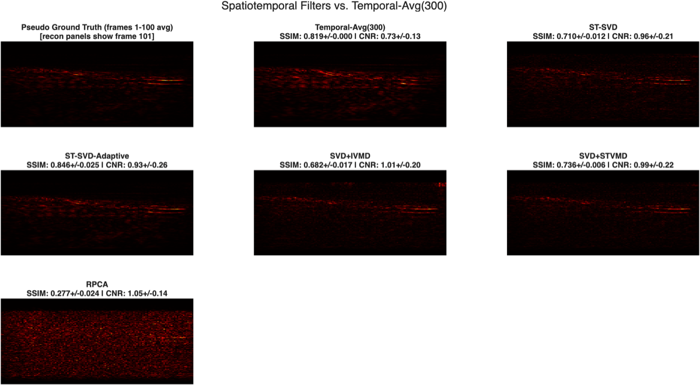
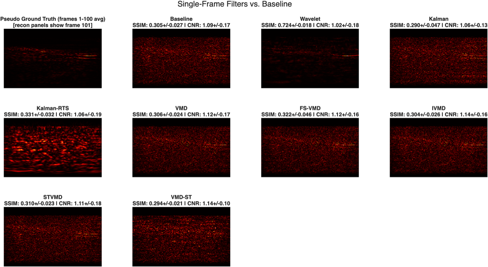

Denoising Photoacoustic Imaging Data

The problem
Photoacoustic images reconstructed from single-shot RF acquisitions are dominated by speckle and static acoustic clutter, which motivates a large space of denoising algorithms — from classical single-frame filters to spatiotemporal decompositions that exploit redundancy across hundreds of frames. But comparing them fairly is deceptively hard: algorithms with access to very different amounts of information aren’t directly comparable, and a scalar metric like SSIM can be inflated by degenerate behaviour, such as simply suppressing the whole image.
What I did
Working with real data from an AcousticX system (a human-finger acquisition, 128 channels × ~1,500 frames), I reconstructed images via delay-and-sum back-projection and benchmarked a wide sweep of denoisers: wavelet thresholding, several Variational Mode Decomposition variants, spatiotemporal SVD (ST-SVD), a SVD+IVMD hybrid, Robust PCA, and a family of Kalman filters.
The core finding: fixing a flawed evaluation
The most important result was methodological. An earlier version of the pipeline was confounded by data leakage: the pseudo-ground-truth reference and the spatiotemporal algorithms’ input window shared frames, which artificially inflated a zero-processing temporal average to an SSIM of 0.912 — higher than any real algorithm. I diagnosed this, rebuilt the evaluation with fully disjoint frame blocks (which corrected that SSIM to a plausible 0.819), and introduced two baseline-relative metrics:
- Signal Preservation Index (SPI) — how much genuine signal survives denoising.
- Background Energy Ratio (BER) — how much background energy is retained.
Together with a “flagged fraction” detector, these expose algorithms that win on SSIM purely by suppressing image energy rather than by preserving structure.
Results
Once suppression artifacts are accounted for, ST-SVD is the strongest defensible algorithm: it preserves substantially more real signal (SPI 0.607) than the more complex SVD+IVMD hybrid (SPI ~0.39) despite statistically indistinguishable SSIM — showing the hybrid’s extra post-processing removes signal without a structural benefit. Several superficially “high-SSIM” methods (wavelet, the hybrids, an adaptive-threshold ST-SVD reaching the study’s highest raw SSIM of 0.846) were flagged as inflating SSIM through suppression. The Kalman family degraded the signal at every iteration and was excluded, and Robust PCA was shown to be a structural mismatch for this data — both reported transparently as negative results.

Takeaway
This project is as much a case study in evaluation methodology as an algorithm comparison. The headline lesson — that the “best” algorithm depended entirely on catching a data-leakage confound and measuring signal preservation, not just image similarity — is exactly the kind of rigour that separates a model that looks good on a metric from one that is genuinely clinically useful.